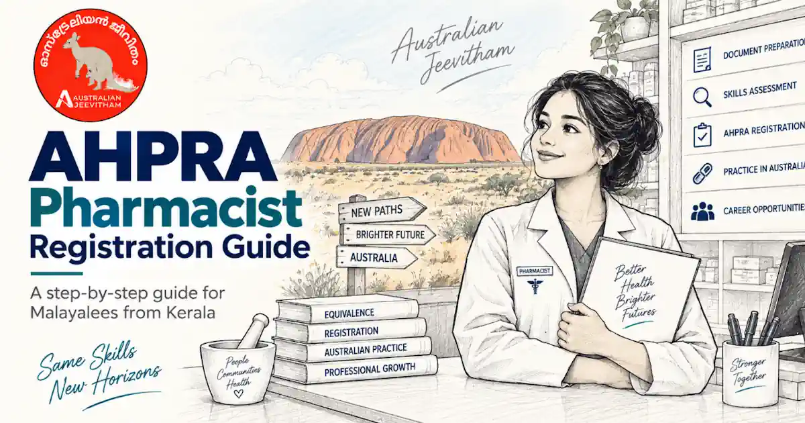

Student visa മുതൽ Graduate visa 485, PR വരെStudent Visa to PR & Graduate Visa (485)
Student visa ഒരു guaranteed PR route അല്ല. നല്ല study decision എന്നത് course quality, career outcome, total cost, visa compliance, backup plan എന്നിവ ചേർന്നതാണ്. The 485 can provide temporary post-study time for eligible graduates, but it does not guarantee a skilled invitation or employer sponsorship.
By Binu Vadakkedath
Published and last updated: September 2026 · Verify current requirements with the linked official authorities
Study must be the primary reason for the student visa. Future migration hopes ഉണ്ടാകാം, പക്ഷേ application-ൽ genuine student requirement സത്യസന്ധമായി address ചെയ്യണം.
- Student 500
- Genuine Student
- 48 Hours
- Graduate 485
- Skills Planning
This guide is general information, not migration, legal, education, employment or financial advice. Rules, fees, occupation lists and assessment processes can change. Verify your circumstances with the official authority and use a registered migration agent or qualified professional where personal advice is required. തീരുമാനം എടുക്കുന്നതിന് മുമ്പ് official website-ലെ ഏറ്റവും പുതിയ വിവരങ്ങൾ പരിശോധിക്കുക.
1. Student visa foundations
A Student visa application generally needs a current Confirmation of Enrolment, Overseas Student Health Cover and evidence addressing the Genuine Student requirement. Financial, English, health and character evidence may also apply.
Most students can work up to 48 hours per fortnight while their course is in session, with different settings for scheduled breaks and some research students. Always check your own visa conditions in VEVO.
2. Genuine Student requirement
The Genuine Student requirement has applied to Student visa applications lodged from 23 March 2024. Home Affairs assesses your circumstances, course choice, education history and the value of study to your future.
A later interest in permanent residence does not by itself count against you, but studying must be the primary reason for the visa. Use your own facts and evidence rather than copied statements.
3. Temporary Graduate visa 485
The 485 has different streams and eligibility rules. Common requirements include a recent eligible CRICOS qualification and lodging within the specified period. The general maximum age is now 35, with stated exceptions for Masters by research, doctoral graduates and eligible Hong Kong or British National Overseas passport holders.
ഒരു stream-ൽ apply ചെയ്ത ശേഷം മറ്റൊരു stream-ലേക്ക് മാറാം എന്ന് കരുതരുത്. Qualification പൂർത്തിയാക്കുന്നതിന് മുമ്പ് current stream rules പരിശോധിക്കുക.
4. Build a PR plan separately
A possible skilled pathway may require an eligible occupation, positive skills assessment, suitable English, age eligibility, enough points, state nomination or employer support. Those rules can change while you study.
Before enrolling, map at least three outcomes: employment in the field, a temporary graduate pathway if eligible, and a return or alternative-career plan if permanent migration does not materialise.
5. Course-selection checks
- Confirm CRICOS registration and course duration.
- Check professional accreditation where relevant.
- Research graduate employment, not only migration marketing.
- Budget tuition, rent, insurance, placement and family costs.
- Read official visa rules and obtain registered advice for personal strategy.
Official sources and current checks
ഈ ലേഖനത്തിലെ പ്രധാന വിവരങ്ങൾ പരിശോധിക്കാൻ താഴെയുള്ള official links ഉപയോഗിക്കുക. Fees, processing times, eligibility എന്നിവ മാറാം.
Frequently asked questions
Does an Australian course guarantee PR?
No. Permanent migration depends on the rules and competitive settings that apply later, including occupation, assessment, age, English, points, nomination and employer demand.
How much can most students work during study periods?
The general limit is 48 hours per fortnight while the course is in session, subject to the conditions attached to the individual visa.
What is the usual maximum age for the 485 visa?
The general maximum age is 35, with specified exceptions including Masters by research and doctoral graduates and eligible Hong Kong or British National Overseas passport holders.
Can I rely on the 485 after any Australian course?
No. The qualification, CRICOS study, timing and chosen stream must meet the current 485 requirements.
Skills assessments, settlement & life after PR

AHPRA & APC Pharmacist Registration
Knowledge Stream, OPRA exam, CAOP, 1,575-hour supervised practice, English requirements, and visa options for Kerala pharmacists.
- OPRA Exam
- 1,575 hrs Practice
- Healthcare

Renting Your First Home
Rental applications, inspections, state-specific bond rules, condition reports, and tenancy resources for new arrivals.
- Bond Rules
- Inspections
- Tenant Rights

Superannuation Guide
12% SG rate, Payday Super, EPF/PF comparison, choosing and consolidating funds, and DASP for eligible former temporary residents.
- 12% SG Rate
- EPF vs Super
- DASP